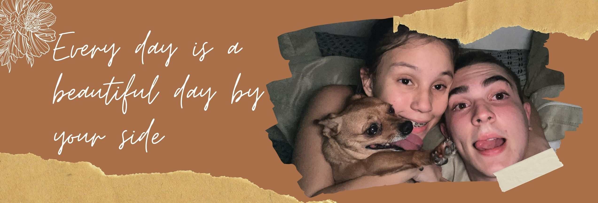

Sobre nós... Pra ser sincero eu não sei bem o que dizer e nem como começar isso, e pra falar a verdade eu nunca pensei que chegaria até aqui com você, claro desde que eu me apaixonei por você esse sempre foi o meu sonho, e do que eu estou falando? Estou falando de ter essa conexão incrivel que a gente tem to falando de ouvir um eu te amo de você a qualquer momento, estou falando de poder ir na sua casa estou falando de conhecer a sua familia, estou falando dos seus pais gostarem de mim, estou falando de você finalmente estar entregue a mim e gostar de mim de verdade, de você entender os seus sentimentos e assumir eles, não deixar mais o medo tomar conta de você, estou falando de eu poder acordar todos os dias e saber que você é o amor da minha vida e que possivelmente eu seja o seu, estou falando de poder gritar ao mundo que eu tenho a garota mais incrivel e extraoridanaria de todo o mundo, a garota mais sensacional que me faz feliz e alegre todos os dias, que me faz bem, que me manda audios contando de como foi o dia de fofocas e coisas que você tem ranço ou que aconteceram com você, estou falando de ser o seu companheiro agora e para todo o sempre, ser seu melhor amigo, seu ombro amigo, alguem que você pode contar sempre que precisar, alguem que vai estar aqui com você independente do que acontecer, alguem que sempre vai querer o seu bem, que sempre vai te ajudar a evoluir e crescer mais e mais, alguem que vai estar aqui com você quando o mundo estiver desabando, quando o mundo estiver nascendo de novo, alguem que vai estar conrtigo em todos os momentos, sejam eles bons ou ruims. Enfim... onde eu quero chegar com tudo isso? Quando eu te mandei a Direct no insta não poderia imaginar que aquela unica mensagem se trasnformaria no que somos hoje, e graças a ela é que estamos aqui, depois de muito "sofrimento", desentendimentos, conflitos, momentos de espera barreiras e tudo mais.
Hoje graças a Deus estamos firmes e fortes juntos, o que eu não poderia imaginar é que você iria entrar na minha vida de tal forma que fosse mudar tudo tão derrepente, de um jeito mágico que nunca tinha me ocorrido antes com ninguem, e foi impressionante a forma como a gente se deu bem logo de cara, a forma como a gente tinha carinho um pelo outro e como a gente foi se aproximando de forma rápida mas com verdade. Eu me lembro que todos os dias na escola eu já chegava pensando na saida, no horario em que a gente iria se encontrar e eu iria sentir o seu abraço que a cada dia que passava ele me confortava mais e mais. E o que mais me impressiona e que mesmo depois de tudo o que ja aconteceu entre nós, continuamos juntos e não conseguimos ficar longe um do outro. Lembro como você era "fria" em relação a sentimentos sobre mim sobre como demonstrar e tals e, olhando hoje em dia eu fico muito muito orgulhoso a forma como você mudou por mim, eu sei que tambem foi o tempo que te deixou mais tranquila em relação a isso, mas você é a principal responsavel por isso, porque nada disso estaria acontecendo hoje se você não tivesse o verdadeiro desejo de mudar, e eu fico tão feliz com a forma como você demonstra gostar de mim, a forma como diz que me ama e demonstra isso em palavras e atitudes, a forma como se preocupa comigo, a forma como você demonstra o que sente sem medo, a forma como você me trata hoje em dia. E eu só consigo agradecer a Deus e principalmente a você pelas coisas estarem dando tão certo pra nós, sabe... é uma conquista ter conhecido sua familia, é uma conquista ter você ao meu lado, é uma conquista ouvir um Eu te amo de você, ouvir que você gosta de mim, ouvir que você quer se casar comigo(mesmo eu achando q seja um pouco de mentirinha ksjksjkss), a forma como você faz questão de me ver e de sair comigo sempre que tem oportunidade, antes você mal queria ficar perto de mim, e hoje ainda bem que não consegue nem ficar longe kjSJsksksksk.
Vivida conforme eu ia te conhecendo eu ia me apaixonando mais e mais e isso ainda ocorre hoje em dia, sempre que você me contava de algo que ja tinha te acontecido, de como você sofreu por determinada situação e tudo o que você ja passou, na minha cabeça eu sempre pensava que eu sempre daria o meu melhor pra você e por você eu sentia que eu precisava ser muito mais do que eu ja era com você, sentia que eu precisava fazer você se sentir amada, se sentir especial, sentir que vale a pena ainda se apaixonar e se entregar pra alguem, eu sentia que eu precisava ser diferente, eu não podia repetir os mesmo erros que as outras pessoas cometeram com você, eu precisava ser melhor porque você merece o melhor, e depois de tudo o que você já passou precisava de alguem que te mostrasse o que é o amor, mesmo sendo com você que eu aprendi o que é amar, eu consegui te mostrar o que realmente é isso, eu precisava você se sentir bem, precisava fazer você se sentir feliz, eu queria que quando você estivesse comigo nada mais importasse, queria que você esquecesse dos seus problemas e de tudo que já te aconteceu, não queria ser só mais um, eu estava preparado pra ser alguem a mais na sua vida, e é por isso que eu sempre busquei ser a minha melhor versão com você, ninguem nunca recebeu o tratamento que eu te dou por mim, você sempre foi e sempre vai ser a unica, porque você é especial e merece isso. É por isso que eu acordo todos os dias tentando ser alguem melhor, e tudo isso por você minha princesa. Porque eu te amo muito muito mesmo e a cada dia que passa eu continuou amando e sinto que esse amor sá aumenta a cada dia que passa.
Eu sempre te falei que eu te acho uma pessoa incrivel, e acredito
que a melhor escolha que eu já fiz foi ter te esperado, foi ter
dedicado meu tempo a você, foi ter escolhido você. E eu tenho
certeza disso porque você foi capaz de fazer por mim o que ninguem
nunca fez, Você me amou, mesmo exitando e com medo decidiu me amar,
aprendeu a me amar e aprendeu a lidar com esse sentimento, aprendeu
a lidar com o medo constante. E eu achei isso incrivel porque as
pessoas sempre acabavam me machucando, seja com um amor falso e
temporario como não sendo reciprocas e me iludindo. Mas com você
sempre foi tudo tão diferente, tão mágico é como se eu sentisse que
você fosse a pessoa certa, como se eu soubesse. Eu acho tão fofo e
incrivel o que a gente tem, jamais imaginei ter isso com alguem e
poder viver isso justo com você a pessoa da minha vida, torna tudo
mais incrivel e especial. Eu nunca amei alguem como eu te amo, e por
mais que não pareca ultimamente eu venho aprendendo mais e mais a te
amar, me apaixonando por você a cada dia que passa, a cada segundo e
a cada batida do meu coração, assim como quando você sorri pra mim,
eu acho isso tão incrivel.
O brilho do teu sorriso muda completamente o meu dia pra melhor, é
como se com você as coisas ganhasse cores, mas quando você sorri....
essas cores se tornam mais vivas ainda, parece que alguem foi lá e
aumentou a saturação do mundo. E isso não é só com o seu sorriso e
eu venho te dizendo isso desde que eu te conheci, que eu sou
completamente apaixonado por cada minimo detalhe seu, cada curva,
cada traço, cada marquinha, cada tudo que você possa imaginar sempre
me chama atenção e você e me faz pensar do quão linda e maravilhosa
você consegue ser. Os seus olhos possuem um brilho extraordinario,
literalmente indescritivel como eles iluminam completamente a minha
vida, é como se eu estivesse vagando por um caminho escuro e os seus
olhos fossem a luz para a paz e o meu guia para o caminho pra casa e
que casa? O seu abraço que é o meu conforto e sempre vai ser. Eu
quero que você saiba que você é a unica que vive em minha mente, é a
unica que desperta todos esses sentimentos em mim, é a unica que eu
penso, é a unica que eu quero e é a unica em que eu me enxergo num
futuro, a unica que habita meu coração e que nunca precisou da chave
pra entrar. Eu te amo agora, Eu te amo hoje E para todo o sempre.
Eu quero passar a minha vida toda com você, e eu não sei se
realmente existem outra vidas mas de uma coisa eu tenho certeza,
seja nessa ou em outras eu te desejo por toda a vida, desejo te
encontrar em outras vidas e em todas elas que possamos ficar juntos.
Eu te amo além dessa vida minha princesa.
Você me inspira, me da apoio e sempre esta comigo em todos os
momentos e contigo tudo é tão perfeito e nesse pequeno texto eu só
quero te proporcionar tudo o que você me proporciona, eu te fiz essa
homenagem não só pra fazer algo que você vem me pedindo a um tempo
mais sim pra tentar expressar melhor o que eu sinto por você meu
amor, e não liga pras poucas palavras ou se eu escrevi errado. Eu só
quero que você consiga entender o que eu sinto por você, mesmo tudo
isso sendo insuficiente pra demosntrar tudo o que eu sinto isso é só
uma parte do que você causa em mim meu amor. Agora vem a melhor
parte acredito eu, e não eu não to falando disso que você deve estar
pensando. Eu estou falando dos chocolates mesmo KSJksjskjskkkk Olha
pro lado meu amor.